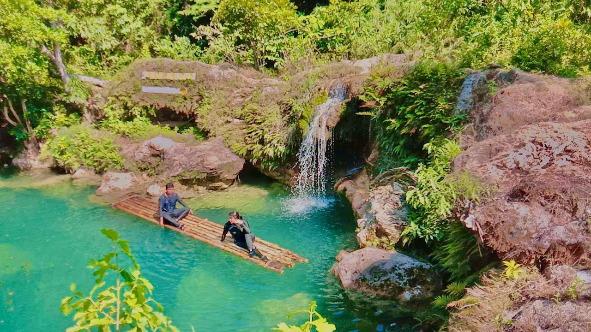
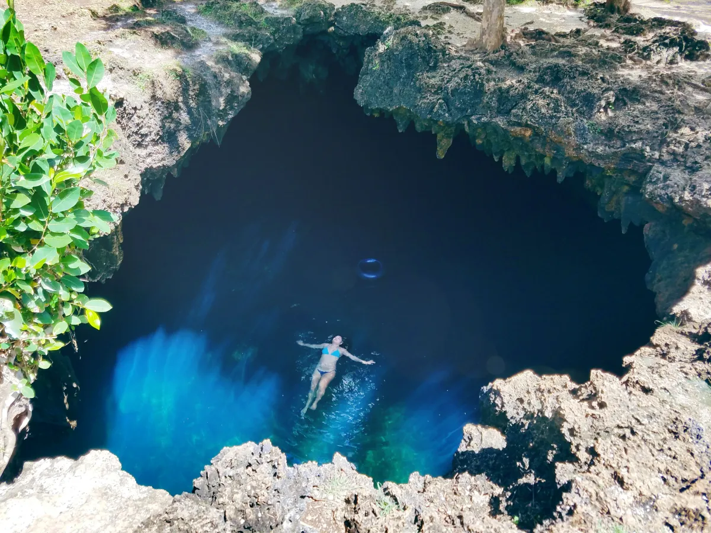
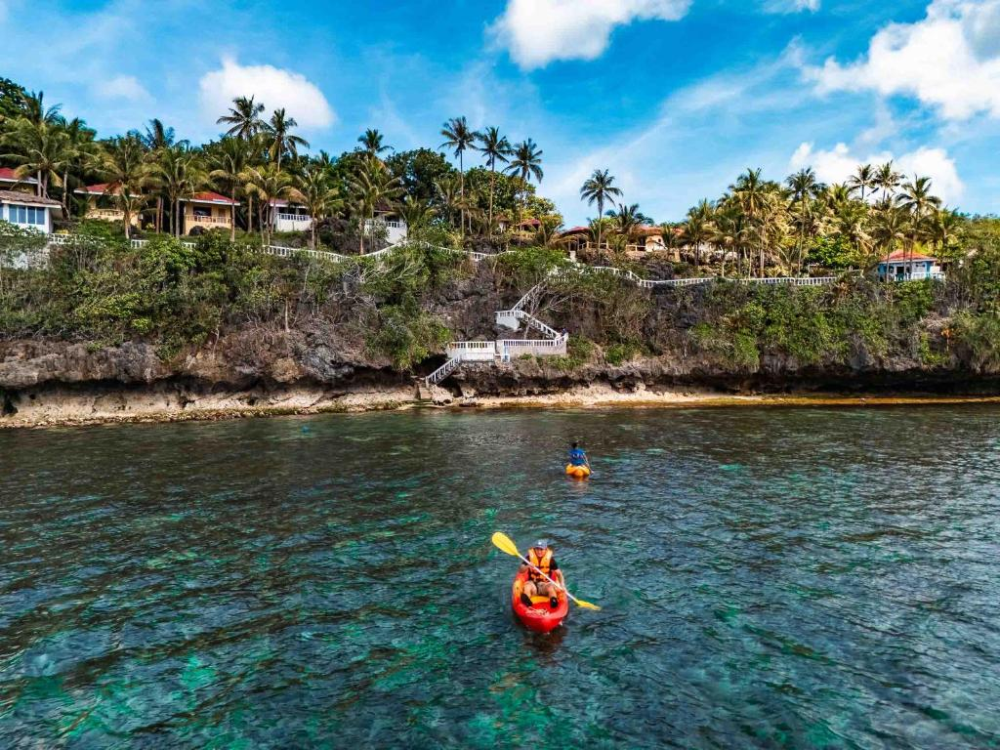
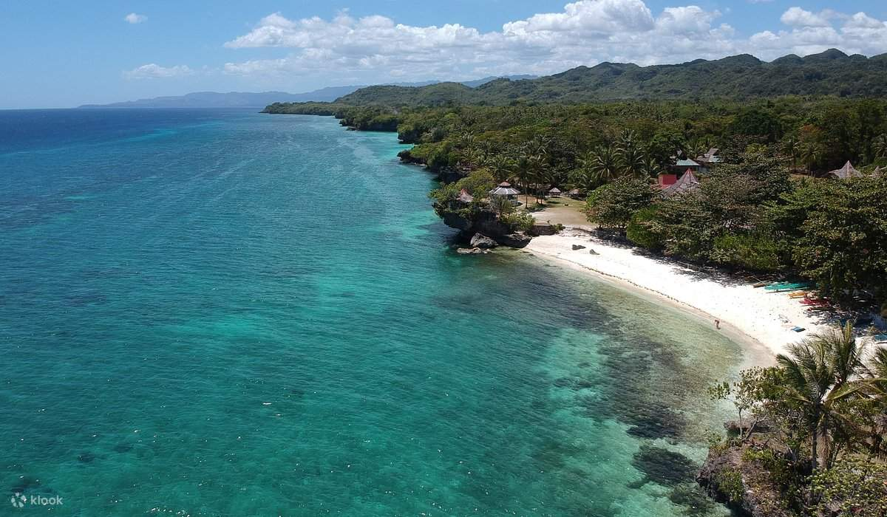

Anda Blue Lagoon is a scenic coastal attraction in the municipality of Anda, Pangasinan, Philippines. Known for its tranquil turquoise waters and white sandy shores, it has become a favored destination for swimming, snorkeling, and leisure trips among travelers exploring the Lingayen Gulf area.
Fun Facts
- The lagoon’s color comes from sunlight reflecting on limestone and coral beds.
- It’s often compared to smaller versions of Palawan lagoons.
- Best visited during midday for peak blue hues.
Setting and Environment

Anda Blue Lagoon lies on the western side of Anda Island, within Pangasinan province. The lagoon’s calm waters are enclosed by natural rock formations and coral structures that give it a distinct blue hue, especially under sunlight. Surrounding vegetation and minimal commercial development preserve a serene, natural atmosphere.
Activities and Attractions

Visitors frequent the site for its relaxed coastal environment, ideal for swimming and underwater exploration. Shallow areas allow easy access for families, while deeper sections attract snorkelers interested in coral and marine life. The lagoon is often visited alongside nearby beaches such as Tondol Beach, forming part of local island-hopping tours.
Tourism and Access

Resorts and homestays of varying comfort levels line parts of the beach, catering to both budget and mid-range travelers. Public transportation and private vehicles from Metro Manila or nearby cities provide access. Peak visitation occurs during summer months (March–May), though weekdays and off-season visits provide a quieter atmosphere.
Cultural and Environmental Significance

Efforts by the local government and residents aim to maintain the lagoon’s ecological balance through responsible tourism and waste management initiatives. The clear waters depend on minimal disturbance of the coral beds and mangrove areas that protect the coastal ecosystem.
Anda Blue Lagoon contributes to Anda’s growing reputation as a sustainable beach destination in Pangasinan. Together with its nearby islands and sandbars, it forms part of the province’s broader ecotourism offerings that highlight natural beauty, accessibility, and community-managed conservation.
A local tale says the lagoon was once a secret bathing place of a diwata (nature spirit). Fishermen claimed they would sometimes hear soft singing at dawn—believed to be the spirit guarding the waters. Whether myth or imagination, it adds a magical aura to the place.